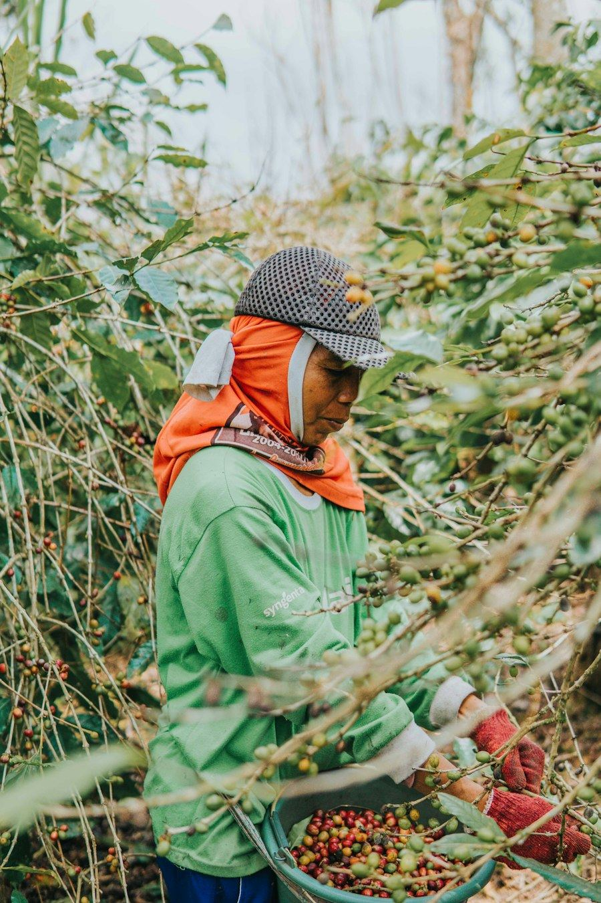
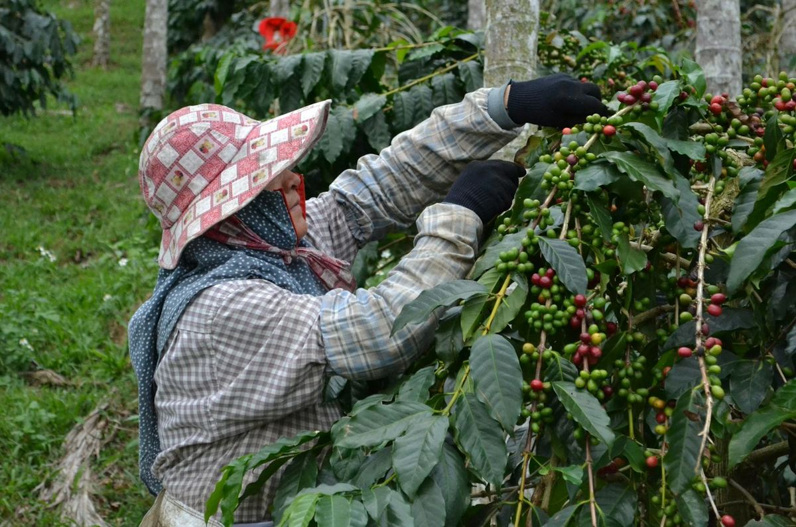
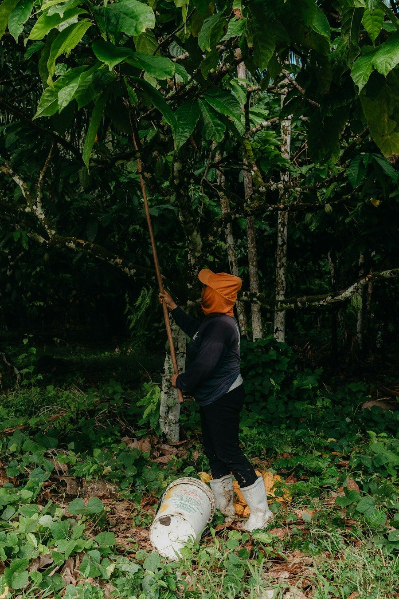
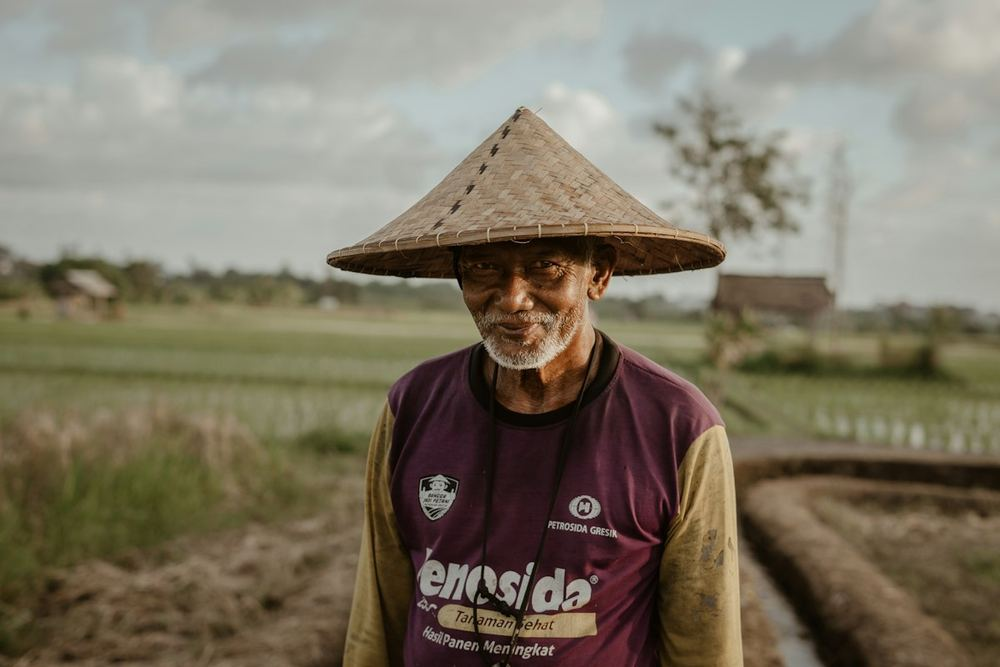
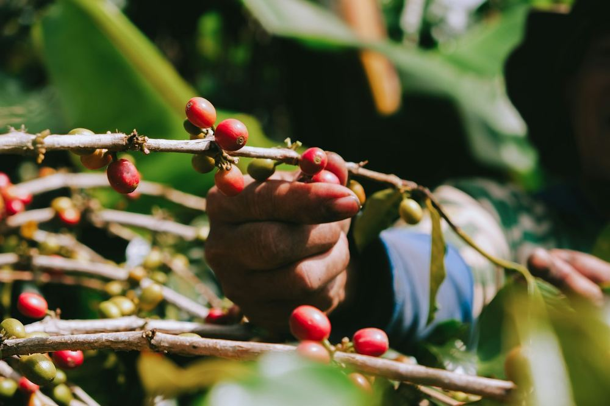

PasarMIKRO memetakan lahan petani Anda, mengumpulkan dan menyimpan seluruh informasi kepatuhan, dan menampilkannya kembali kapan pun diminta, dengan setiap transaksi terhubung ke kebun asalnya. Pembeli Eropa Anda mendapat jawaban yang pasti.
Konsultasi dan pengaturan awal gratis untuk perusahaan yang bergabung paling lambat 13 November 2026.

Kepatuhan EUDR pada dasarnya terdiri dari tiga pekerjaan yang bersama-sama menghasilkan ketertelusuran tingkat kebun (plot-level traceability). PasarMIKRO menangani ketiganya, sehingga ketika pembeli Eropa atau otoritas bertanya dari mana sebuah pengiriman berasal, jawabannya sudah tersimpan dan terhubung ke sumbernya.
Tim lapangan kami mendatangi setiap kebun dan mencatat lokasinya secara tepat: titik GPS untuk kebun hingga 4 ha, poligon batas lengkap untuk kebun yang lebih luas. Setiap kebun lalu dicek terhadap tutupan hutan per 31 Desember 2020 dan peta kawasan lindung.
Semua data yang diminta EUDR dikumpulkan sekali dan disimpan di satu tempat yang aman: siapa petaninya, di mana kebunnya, dokumen lahan apa yang dimiliki, dan setiap pembelian dari kebun tersebut. Catatan disimpan sekurang-kurangnya lima tahun sesuai ketentuan regulasi.
Saat pembeli, auditor atau otoritas Uni Eropa menanyakan sebuah pengiriman, Anda bisa menampilkan jawabannya kapan pun diminta. Mulai dari transaksi, lot atau kontainer mana pun, lalu telusuri kembali ke petani dan kebun asalnya, lengkap dengan buktinya.
Anda cukup memasukkan nomor transaksi atau lot. Catatannya menampilkan petani pemasok, kebun mereka di peta, hasil cek deforestasi untuk setiap kebun, dan dokumen yang tersedia. Jawaban bisa dikirim ke pembeli di hari yang sama.
EU Deforestation Regulation (EUDR), atau Regulasi (UE) 2023/1115, adalah undang-undang Uni Eropa yang melarang produk terkait deforestasi dijual di pasar Uni Eropa. Regulasi ini mulai berlaku sejak 29 Juni 2023.
Setiap perusahaan yang memasukkan kopi atau kakao ke pasar Uni Eropa wajib membuktikan tiga hal untuk setiap pengiriman: bebas deforestasi, diproduksi secara legal, dan dapat ditelusuri hingga ke kebun tempat komoditas itu ditanam. Tanpa bukti tersebut, produk tidak dapat lolos bea cukai Uni Eropa.
Perusahaan yang melanggar dapat dikenai denda sekurang-kurangnya hingga 4% dari omzet tahunan di Uni Eropa, penyitaan barang, dan larangan sementara mengikuti pengadaan publik. Karena itu pembeli Eropa kini meneruskan kebutuhan data ini ke hulu, yaitu ke eksportir, koperasi dan petani di Indonesia.
Produk turunannya juga diatur: kopi sangrai, pasta kakao, lemak kakao, bubuk kakao dan cokelat.
Uni Eropa menggolongkan Indonesia sebagai negara risiko standar. Setiap pengiriman memerlukan uji tuntas penuh, tanpa jalur yang disederhanakan.
Komisi Eropa menegaskan pada Mei 2026 bahwa tidak akan ada penundaan lagi.
Kopi atau kakao harus berasal dari lahan yang tidak mengalami deforestasi atau degradasi hutan setelah 31 Desember 2020.
Ditanam sesuai hukum Indonesia: penguasaan dan hak atas lahan, aturan lingkungan, ketenagakerjaan dan perpajakan, lengkap dengan dokumen seperti sertifikat SHM atau STDB.
Pernyataan uji tuntas di sistem informasi Uni Eropa dengan geolokasi setiap kebun: titik GPS untuk kebun hingga 4 ha, poligon untuk kebun yang lebih luas.
Serahkan paket data siap-DDS di setiap kontrak dan pertahankan pembeli Eropa Anda.
Daftarkan anggota dan kebun sekali saja, lalu catat setiap pembelian secara digital lewat ponsel.
Pisahkan volume yang patuh dan yang belum, serta telusuri setiap batch ke kebun asalnya.
Dapatkan data hulu dari daerah asal di Indonesia yang sebelumnya sulit dijangkau.
Kopi Indonesia sebagian besar ditanam oleh petani kecil di lahan sempit, sering kali berbatasan dengan hutan lindung di Sumatra, dan melewati beberapa pengepul sebelum diekspor. Mencampur lot dari ratusan kebun adalah hal biasa. Di bawah EUDR, setiap kebun dalam campuran tersebut harus diketahui.

Kakao Indonesia berasal dari kebun petani kecil, sering berupa agroforestri, dan melewati pedagang desa sebelum sampai ke tempat fermentasi, pabrik pengolahan dan eksportir. EUDR mencakup biji kakao dan semua produk turunan yang dibuat pembeli Eropa Anda, sehingga data kebun harus tetap terjaga sampai tahap pengolahan.

Kami memetakan rantai pasok, kontrak Eropa dan kekurangan data Anda, lalu menyusun rencana agar siap tepat waktu.
Akun perusahaan, struktur rantai pasok dan tim Anda disiapkan di PasarMIKRO, siap mendaftarkan petani.
Tim lapangan dan aplikasi kami mendaftarkan petani (KYC) dan mengambil titik atau poligon kebun, lalu mengeceknya terhadap tutupan hutan 2020.
Setiap pembelian tercatat dengan dukungan PasarMIKRO, sehingga keterkaitan kebun dan lot terbentuk otomatis seiring transaksi.
File geolokasi, bukti risiko dan catatan lot untuk setiap pengiriman, plus pemantauan berkelanjutan.

Ketertelusuran menyatu dengan aplikasi yang sama tempat petani dibayar lebih cepat dan bisa mendapat modal kerja melalui Talangin. Kepatuhan memberi manfaat nyata bagi mereka, bukan sekadar survei tambahan. Sejauh ini Rp 807 miliar telah disalurkan kepada petani dengan dukungan PasarMIKRO.
Skenario contoh yang menggambarkan alur kerja sama yang umum.
Tantangan: biji kopi datang dari belasan pengepul; eksportir mengenal pengepulnya, tetapi tidak mengenal kebunnya.
Bersama PasarMIKRO: pengepul mendaftarkan petaninya di aplikasi, kebun dipetakan dan dicek, kebun yang ditandai di dekat batas taman nasional diverifikasi di lapangan, dan volume yang patuh dibeli serta disimpan sebagai lot terpisah.
Hasil: setiap kontainer dikirim bersama paket data yang bisa langsung dipakai importir.
Tantangan: daftar anggota masih di kertas, tidak ada lokasi kebun, dan kebun agroforestri terbaca sebagai hutan oleh satelit.
Bersama PasarMIKRO: daftar anggota dan kebun, pengecekan lapangan untuk membuktikan kebun sudah ada sebelum 2021, dan catatan pembelian digital hingga tahap fermentasi.
Hasil: pabrik menerima bukti yang dapat diandalkan, dan anggota dibayar lebih cepat.
Tantangan: banyak lot kecil, staf terbatas, dan setiap roaster meminta data dalam format berbeda.
Bersama PasarMIKRO: pendaftaran ringan dengan Mikro ERP, satu paket data standar per lot, dan cerita asal-usul yang bisa dipakai roaster di kemasan.
Hasil: kepatuhan menjadi nilai jual bagi pembeli spesialti.
Rantai pasok rotan dan digitalisasi penganyam rumahan.
Ketertelusuran gula aren dan kepatuhan sumber bahan baku.
Pelaporan PNBP untuk rantai pasok hasil hutan bukan kayu yang berkelanjutan.
Digitalisasi perdagangan beras petani kecil di salah satu sentra padi utama Indonesia.
Data tercatat saat transaksi terjadi, bukan dari survei sekali jalan yang sudah usang saat panen berikutnya.
Verifikasi, inspeksi dan survei stok langsung di lapangan ketika data satelit saja tidak cukup.
Modal kerja terintegrasi dan pembayaran lebih cepat memberi petani dan pengepul alasan untuk berbagi data.
Tim berbasis di Jakarta yang bisa berbicara dengan petani maupun manajer kepatuhan di Eropa.
Dashboard khusus dan solusi white-label untuk eksportir, koperasi dan pengolah.
Data interoperabel yang tersusun untuk dibagikan ke sistem pembeli dan selaras dengan dashboard ketertelusuran nasional Indonesia.
Cara tercepat untuk siap sebelum 30 Desember adalah memulai sekarang. Daftar paling lambat 13 November dan kami tanggung biaya memulainya.
Tinjauan rantai pasok, daftar kekurangan dan jadwal menuju kepatuhan bersama tim EUDR kami.
Akun perusahaan, struktur rantai pasok dan pelatihan tim di PasarMIKRO.
Berlaku untuk perusahaan yang mendaftar Program EUDR PasarMIKRO paling lambat 13 November 2026. Syarat dan ketentuan berlaku.
Mulai 30 Desember 2026 untuk perusahaan besar dan menengah yang memasukkan produk ke pasar Uni Eropa, dan mulai 30 Juni 2027 untuk perusahaan mikro dan kecil. Komisi Eropa menegaskan pada Mei 2026 bahwa tidak akan ada penundaan lagi.
Biasanya importir Anda di Uni Eropa yang mengajukannya, sebagai perusahaan pertama yang memasukkan barang ke pasar Uni Eropa. Namun mereka hanya bisa melakukannya dengan geolokasi kebun, bukti legalitas dan catatan lot dari Anda, sehingga pekerjaan datanya tetap ada di pihak Anda.
Risiko standar. Operator wajib melakukan uji tuntas penuh dengan penilaian dan mitigasi risiko, dan otoritas Uni Eropa memeriksa sekurang-kurangnya 3% operator yang mengambil pasokan dari negara berisiko standar.
Kebun seluas 4 hektare atau kurang boleh dicatat dengan satu titik GPS; kebun di atas 4 hektare memerlukan poligon batas kebun. Banyak pembeli lebih memilih poligon untuk semua kebun karena pengecekan deforestasi menjadi lebih andal.
Tidak. Sertifikasi membantu penilaian risiko, tetapi EUDR tetap mewajibkan geolokasi kebun dan pernyataan uji tuntas untuk setiap pengiriman.
Perusahaan yang mendaftar Program EUDR PasarMIKRO paling lambat 13 November 2026 mendapatkan konsultasi EUDR dan pengaturan awal platform tanpa biaya.
Ceritakan tentang usaha kopi atau kakao Anda. Kami akan menghubungi Anda dalam satu hari kerja, meninjau rantai pasok dan kontrak Eropa Anda, dan menyiapkan akun Anda di PasarMIKRO tanpa biaya.
